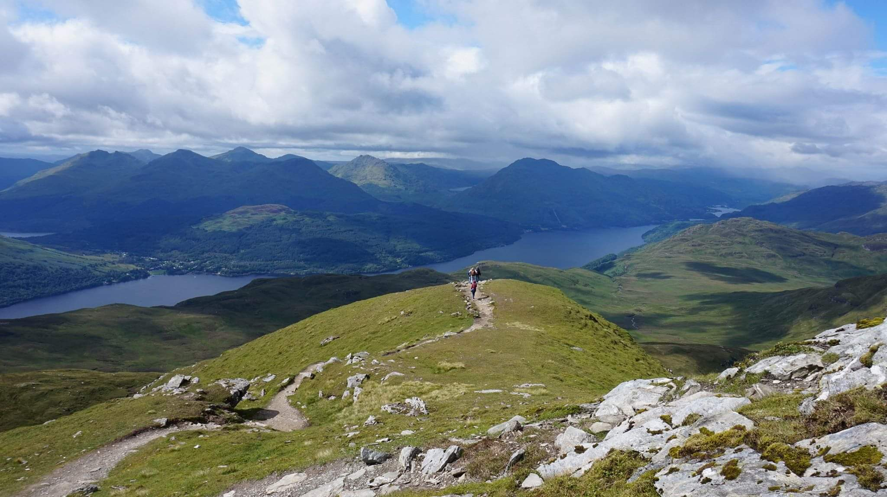

Ben Lomomd
Walk Statistics
| Distance | 12km / 7.5 miles |
| Time (summer conditions) | 4.5 - 5.5 hours |
| Ascent | 990m |
| Map | map |
Ben Lomond is one of the most popular Munros, rewarding the 30,000 people who make it to the top with fantastic views of the length of Loch Lomond and far into the hills to the north and the Trossachs to the east. The route has been well made, however the optional return down the Ptarmigan ridge can be muddy and is rocky in places making the going more difficult in poor visibility.
Terraine
Clear path with some rocky sections on the alternative rougher return route. As with all mountain walks, full hillwalking clothing and equipment must be carried. If there is snow on the route this includes an ice-axe and crampons.
Public transport
None to start. Ssummer ferry from Tarbet Pier to Rowardennan, buses to Tarbet from Glasgow and Balloch.
hillwalking in Winter
Please note that hillwalking when there is snow lying requires an ice-axe, crampons and the knowledge, experience and skill to use them correctly. All route descriptions and difficulties given here are for summer conditions. See our Winter Essentials page for basic information on the skills, techniques and knowledge needed for winter hillwalking.